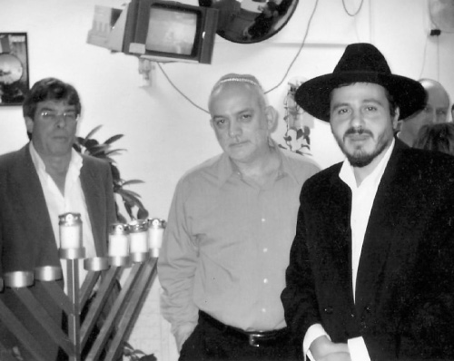

Shliach of the Airwaves
Uri Revach started his celebrated journalist career twenty years ago. He didn’t dream that his life would change drastically and he would become a shliach in the Israeli broadcasting world. * Today, he lives the life of a Chassid along with his wife and five children, and he brings the Rebbe’s messa

The one who runs the show, as well as all the activities there, is none other than the reporter for Arutz 1, Uri Revach. The room that the davening takes place in is his private office that has turned into a shul. There is an Aron Kodesh with a Torah, a Torah library, a bima for the Torah reading, talleisim and t’fillin. All the station’s employees know that when they have a question about some point in Judaism, Uri is the man to turn to.
At the end of the davening, Uri announces an upcoming farbrengen for employees of the station. He also urges people to attend the ongoing shiurim that take place, surprisingly, in the office of the director. It seems like the typical Chabad house with mekuravim, regular attendees of prayer services, farbrengens and shiurim. Welcome to the Chabad house of the IBA
DOUBLE SHLICHUS
When you sit down to talk with Uri, you meet a Chassid who lives and breathes Chassidus and hiskashrus. He has the enthusiasm of a shliach and speaks the language of mivtzaim – arranging a farbrengen, preparing for mivtza Chanuka, and putting up a mezuza in the home of one of the mispallelim. For a moment, he seems out of place in the broadcasting offices, but as a shliach who creates an environment, Uri walks the corridors of the broadcasting station as an integral part of the scene. He is loved by the employees and broadcasters and is admired in all departments of television and radio.
He feels he has a double shlichus, among the employees and as a Chassidic personality on the screen where he brings the Rebbe’s message to hundreds of thousands of homes in Eretz Yisroel. Last year, Uri covered a number of the big battles over Shleimus Ha’Aretz and Mihu Yehudi, which enjoyed unprecedented viewer response.
“It began with an expose of the non-kosher conversions in the IDF which made waves. We did a report during the main news broadcast about the halachic problems with the conversions being done in the army and were able to bring this to people’s attention. In the report, there was a quote from the Rebbe in which he spoke very sharply about the rabbanim who pasken not according to Halacha and legitimize conversions and shed blood.
“We also quoted Rabbi Gedalia Askserod who explained the problem with these conversions, and this created an uproar in the country. Although it wasn’t a simple matter to go out publicly against these rabbis, we decided to go ahead anyway and we saw this was effective.”
Uri said that President Shimon Peres’ wife died the same week that the topic of Mihu Yehudi was raised, and he decided to use his connections to bring R’ Shimon Friedman [AKA Shimon HaTzaddik, see issue #836], then of Kfar Chabad, to speak to him. Thirty years earlier, R’ Friedman had been arrested next to Peres’ house in Ramat Aviv when he tried to speak to him and ask him to amend the Law of Return. When Uri and R’ Friedman went for the Shiva, he finally met with Peres and asked him to amend the law.
“As for Shleimus Ha’Aretz, we quoted the Rebbe in a piece that we did about the Arab takeover in Tzfas. Whenever we quote the Rebbe, I get feedback. People see what the Rebbe said and how pained he was and this makes an impact on them. The P’sak Halacha of Rabbi Shmuel Eliyahu against selling homes to Arabs generated a storm of opinion and engendered the letter signed by rabbanim.”
REPORTS WITH MIRACLES
Uri began his work in the media when he was a twelfth grader, in a youth program on a radio station in Tel Aviv. At that young age his broadcasting talents were apparent and he was identified as someone whose future career would be as a journalist behind the microphone. He points out that today, twenty years later, he broadcasts his Melaveh Malka program every Motzaei Shabbos on the same channel that his youth program was broadcast on back then.
When he graduated school, he signed up to serve at the military station, Galei Tzahal, and hoped to be accepted as a military reporter. However, he was denied a chance to test for the position and had to undergo a long battle until he was finally accepted to serve at the military station. He says this was the first time that he felt Hashem’s hashgacha.
“I felt that if Hashem wanted me to be accepted, I would be there, and that is what happened. I had a strong feeling of bitachon in Hashem and hashgacha pratis at that time.”
Uri was accepted as a reporter on the economy and social issues at the military broadcasting station.
This was not the first time Uri had turned to Hashem. He grew up in a traditional home and Judaism was never foreign to him.
“We had Kiddush on Friday night, and we celebrated the holidays and fasted on Yom Kippur. The house wasn’t religious, but it was definitely close to Hashem. I always had emuna within me, but it was hidden. I had to undergo a process to uncover it.”
This process occurred at the same time as his success in his career in the media unfolded.
“During the years that I worked at Galei Tzahal, I covered a number of significant events including the first tent protesters and the Gulf War. During the war, I would hear the missiles falling in Tel Aviv and I would grab a taxi and go to the nearest hospital to report from there. I remember that the victims were mainly those suffering from fright and shock or those who did not know how to properly use their gas mask and had been injured. During the war, I saw the miracles from up close and it made a tremendous impression on me. I realized there was Someone who was running the world.”
Uri did not keep his feelings to himself; they were evident in his reporting. He mentioned the miracles and hashgacha pratis in his reporting and told the listeners how the hand of G-d was blatantly visible during the war. When he had to put together a segment, he always chose those people who spoke about miracles and emuna and bitachon.
At the end of the war, Uri realized the dream of every reporter and went into television broadcasting. He was sent to Yerushalayim to work for Channel 2 Israeli television, and he began working as a political reporter.
“The work was massive, around the clock, and I was considered a rapacious reporter without scruples. My daily schedule entailed chasing after political stories or machinations that were going on in the upper echelons. From a worldly perspective, I was at the height of my career, but I suddenly felt an enormous emptiness. In hindsight, I realized that I hurt a lot of people including many politicians who suffered from my scathing tongue and my investigations.”
As Uri’s career skyrocketed, his feelings of aversion to the world of the media increased. He began thinking about his constant involvement in lashon ha’ra and rechilus and felt distant from the cruel world of media coverage, which often hurt people in order to obtain another juicy story. At that point, he decided that the time had come to return to his roots. He began attending shul more frequently and attended shiurim at Machon Meir.
He also began understanding the concept of Shleimus Ha’Aretz.
“I started getting involved in the issue of the possession of the land in Eretz Yisroel and this came across in my reporting. As part of my job, I was responsible for covering the office of the presidency, which was held by Ezer Weizman at the time. I suddenly found myself asking him all kinds of questions about Shleimus Ha’Aretz in interviews. He gave me a look as though to say, why are you asking me all these questions?
“That was also the first place where I showed up wearing a kippa. This was when I traveled there after davening with a religious reporter from Galei Tzahal. He had called me to say I had forgotten his kippa on my head. I decided, then and there, that I would always wear a kippa. I remember that when I showed up at the studio, everyone asked me who had died. They were sure I was in the midst of Shiva or was a mourner, G-d forbid.”
FIRST CONNECTIONS WITH CHABAD
Uri decided to follow the approach he had taken in his work as a journalist, i.e. he would not take other people’s comments into account. After the kippa he added tzitzis, Shabbos and kashrus. He still wasn’t fully satisfied though. Something was still missing.
“One night, after an exhausting day, I was sitting in a cafe with a friend and telling him about my search for the truth. He told me that he himself came from a Lubavitcher family and all his brothers are shluchim of the Rebbe around the world. He acquainted me with the world of Chabad and described the Chassidic experience. For the first time in my life, I heard about a farbrengen, a mashpia, a shiur in Chassidus and a Chassidic dance. The stories greatly excited me and I asked him to take me to a farbrengen.
“A few days later, he called me and invited me to a farbrengen with R’ Reuven Dunin a”h in Kfar Chabad. When I arrived, I immediately felt at home. That was my initial venture into the world of Chabad.
“I decided to add Maariv with a minyan to my daily schedule and began attending farbrengens. Through that bachur, I met R’ Daniel Edery of Ramat Shlomo who offered to learn sichos on the parsha with me on a weekly basis. I discovered a world of depth that I did not know existed. The Rebbe’s sichos really touched me in regards to my life’s mission. For the first time in my life, I felt what emuna and bitachon are in a deep way.”
This also affected Uri’s work. He felt that he could no longer continue in his usual work as a reporter and decided to leave the world of the media.
“As time went on, I felt I simply could not continue to be involved exclusively in stories or exposes that hurt people. I felt suddenly estranged from the predatory world of the media.”
Uri left the news station and became a media consultant to the Minister for Religious Matters. That is where he met his wife.
“My wife Dikla worked there as an executive secretary, but the interesting thing is that I never saw her. The shidduch idea came from other employees in the office and after we met we decided to marry.”
Politicians and many public figures were invited to the wedding. They knew Uri from his previous positions. Many of them, who were unaware of the transformation in his life, did not understand why the wedding had men and women separated and why the groom wore a hat and suit and had a small beard.
They got their answers once Uri began what he calls his “forgiveness tour” that took place after the wedding. He felt he had to make amends for hurting people in the course of his work, and he called hundreds of politicians and numerous other people and asked forgiveness.
“One of them was Ezer Weizman. I had mercilessly covered a story about his allegedly accepting large sums of money from businessmen before becoming president, without reporting this to the proper authorities. He was eventually forced to resign. I felt that I had to go to him and apologize in person.
“When I knocked at his door to his office in Tel Aviv, together with my wife, he was very surprised, but he welcomed me graciously for having come to ask his pardon. Other people thought I was crazy. Some said, ‘Don’t worry, you’ll get over it.’ Others, in their shock, did not understand what I wanted. People could not understand the process I had been through.
“Until today, there are people who know me from that time who don’t understand how I’ve changed. Many reporters who meet me today don’t understand the change from the irascible reporter I used to be back in the period before I became a baal t’shuva.”
TRIP TO THE REBBE AND HACHLATOS
The next step in Uri’s journey to Chabad was when, during a Shabbos meal with the shliach R’ Yisroel Lipsker, the shliach said he was going to the Kinus HaShlichus. He described the special atmosphere of 770 and the significance of a trip to the Rebbe. On the spot, Uri told him that he would be joining him. Two weeks later, Uri was in 770, surrounded by thousands of Chassidim including hundreds of shluchim from around the world.
The visit to 770 won Uri over and he decided to become mekushar to the Rebbe with all his heart and become his Chassid. He had found what he had been searching for, and it was clear to him that he had to fulfill his shlichus as a loyal soldier of the Rebbe.
“When I was in 770, I decided that from that day on, I would no longer touch my beard. Along with the beard came the rest of a Chassidic appearance and I felt happy with my hiskashrus to the Rebbe. The experience of being in 770 really reached me in a deep way and changed my outlook. I felt that I was in a holy place that contained a fire which went out from there to the world at large. The simcha I felt there I did not experience anywhere else.”
There was another hachlata that Uri made in 770. He had an offer to return to the world of television, this time as a report for Channel 1. As someone who ran away from the world of ratings and publicity, he initially wanted to reject the offer.
“As a baal t’shuva, I was terrified about returning to the screen and the world of the media.”
However, his visit to 770 gave him strength. He realized that this job entailed a unique shlichus which he could not avoid.
“I made a difficult decision to return to work as a reporter. When we were in 770, I felt that I had kochos from the Rebbe to take this on. I knew that the Rebbe wants us to utilize every means to spread the light and that I had an opportunity to use my job to spread the Besuras Ha’Geula.”
He returned to Eretz Yisroel and agreed to sign a contract.
At first, Uri had to look for the shlichus in his new job. For example, when he was sent to report on an attack on Rechov Yaffo in Yerushalayim, he included a description of a woman in the area who proclaimed Yechi. When the editor asked him what this had to do with the story, he explained that its purpose was to portray an appeal for the Geula following the attack.
Later on, Uri found ways of conveying the Rebbe’s message directly.
“When I took this job, Motty Eden was the chairman of the television division. We decided together to shoot the movie, HaMelech HaMoshiach, which was broadcast the night of Tisha B’Av and got an 8.7% rating (of all households in Israel). That was a very high rating by any standard and generated a lot of feedback. People from all over the country were moved by the stories and the living depictions presented in the movie and were astounded by the Rebbe’s personality and leadership. This was a high point as far as conveying a message of Geula via television.”
In order to film the movie, Uri spent months collecting live footage. He had stories of couples who had children thanks to the Rebbe’s brachos, interviews with shluchim, and the life story of a young man who returned from the Far East and decided to change his life after visiting a Chabad house, and even an interview with an Arab leader who spoke about the Rebbe’s work in promoting the Seven Noachide Laws. The intense effort that went into the work was apparent in the movie, which combined excerpts from farbrengens of the Rebbe with the moving stories.
MOVIES AND NEWS SEGMENTS WITH CHASSIDIC MESSAGES
Since then, Uri has brought to the screen hundreds of items and reports about the work of Chabad Chassidim around the world. He enthusiastically covers the life stories of shluchim, conveys the Rebbe’s message on issues of the day, and tries to introduce into every program the message of “The time for your redemption has arrived” in a clear way.
He aired a documentary film about Ayal Karutchi of Tzfas and his story of t’shuva. The movie dealt with the topic of learning Chassidus as a response to assimilation. It moved many people who related to the messages conveyed through the story.
“There is a special power to the media to influence public opinion. The power of the media is that it shapes people’s views and one is able to convey hard-to-digest ideas in a palatable form.”
Whenever there is news about talks that will adversely affect Eretz Yisroel, Uri quotes the Rebbe and conducts interviews with Chabad rabbis who protest these talks. During his years of work at the broadcasting authority, he has covered dozens of activities that oppose the undermining of Shleimus Ha’Am and Ha’Aretz.
The highlight of his work is the popular program called Melaveh Malka, which is on the Moreshet station of Kol Yisroel. It is actually a Chassidishe farbrengen that takes place with the mashpia Rabbi Yosef Tzirkus, who farbrengs on timely matters. Any significant upcoming Chassidic date is mentioned, as well as what the Rebbe says about it. There are stories about the Rebbe and about the work of his shluchim. He recently had a program in which the shluchim in the Talbiya neighborhood of Yerushalayim were interviewed. They told about the dollar from the Rebbe that they gave to Mrs. Shalit, which had the date of Gilad’s release on it.
“We try to spread light. We always consider which stories will make people happy and feel good. For example, we once did a segment on the Zalmanov family of Tzfas, which consists of over 20 children, and people said that the piece inspired them. We play tapes from farbrengens and niggunim and expose listeners to the special world of Chassidus. On one of the programs that took place close to 24 Teves, we played a recording of the niggun Dalet Bavos at the gravesite of the Alter Rebbe in Haditch.”
Last year, two of Uri’s closest friends were appointed to high positions in the IBA: the journalist Yoni Ben-Menachem, who was appointed director general of the IBA, and the journalist Micky Miro, who was appointed director of the Kol Yisroel radio broadcast network. Uri points out that the two were appointed after R’ Tzirkus announced the new positions at the Purim seuda in his house.
“The two of them had not been thinking about these jobs at all. And yet, R’ Tzirkus announced that Mickey would become the director of radio broadcasting and Yoni would become the director general of the IBA.” And that’s what happened. A short while later, in a new round of appointments, the administration decided that the two were suitable for those positions.
Since Ben-Menachem’s appointment, the broadcasting company has a shiur in Chassidus in his office once a week, which is attended by many employees. Ben-Menachem frequently attends the shul and helps all the outreach work at the station. Miro helps a lot in the outreach activities within the walls of the station, as well as with the Melaveh Malka program that is hosted on the radio network that he directs.
USING THE MEDIA TO HASTEN THE GEULA
“It is possible to instill the Besuras Ha’Geula in every piece of news coverage. Take for example, the movie HaMelech HaMoshiach that enjoyed unprecedented success as far as ratings are concerned, and dealt entirely with Moshiach. That proves that today people want Geula. I feel that we are not doing enough and I am sure that so much more can be done. Conveying the Rebbe’s message on Channel 1 in the clearest way is Geula. When thousands of people hear the Melaveh Malka program every Motzaei Shabbos, they are listening every week to what the Rebbe said and it definitely gets them to thinking in the mindset of Geula.
“When I was a child, I would read a newspaper whose slogan was ‘Without Fear.’ That is how I feel today in my work as a journalist. We need to bring the Rebbe’s message with pride and it will get through. We need to look for the spark of Moshiach within everything, to find how the content is connected with Geula and convey that message.
“My job is a shlichus in every respect. There is no other way of looking at work like this. As a baal t’shuva, I was inclined to keep my distance from this world, but it was the charge of shlichus which gave and gives me the energy to continue. When you start the day by learning Chassidus and a Chassidishe davening, you are imbued with the strength for shlichus; and that is what I do, try to bring the atmosphere of Chassidus here to the broadcast authority.
“Until Moshiach comes, we have plenty to do. We must constantly work and with Hashem’s help we will succeed in fulfilling the shlichus of the Rebbe and draw the Sh’china down to earth.”
CHABAD HOUSE AT THE ISRAEL BROADCASTING AUTHORITY
A number of years ago, Uri decided to turn his office at the television department into a shul. He began holding minyanim and shiurim there. Slowly, the place turned into a bustling outreach center. Before long, the place became too small. So with the approval of the former director of television programming, Motty Eden, a wall separating Uri’s office from the next room was taken down.
Following an article that was written about Uri’s work, a Torah was donated and the Hachnasas Seifer Torah was attended by many public figures including ministers and Knesset members. For every holiday, a program is arranged for all the employees. On Chanuka, a menorah is set up in the main lobby. Last year, the activities spread to other channels, where Uri went along with a group of bachurim to light menorahs.
Sholom Ber Crombie. "Shliach of the Airwaves." Beis Moshiach, no. 851 (September 27, 2012).